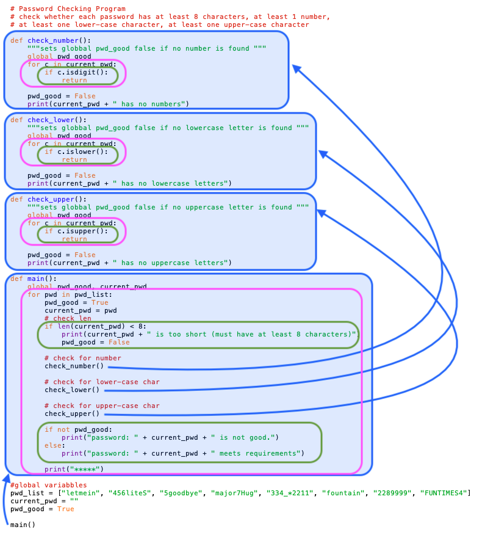

7.5. Combining Iterations, Conditionals and Functions¶
In this section, we will look at examples where we combine all three of these building blocks together in various ways. The purpose of looking at these examples, along with the flow charts that are color-coded (blue to show function blocks, green to show conditional blocks, and pink to show iteration blocks) is the ways that these things can all work together. Every program you write will make use of these blocks of code, nested in each other in lots of different ways.
Let’s look at an example of a program that uses all of these components, combined and nested together. This program is designed to check through a list of potential passwords and determine whether each password meets a set of four requirements. Run the program. This program is not interactive, so the output is only in the console. But note the use of functions, loops, conditionals and how they are combined.
After you have run the program above, look at the code image below, which highlights with the functions, conditionals and loops with the same color-coding we’ve been using. We’ve also added arrows from the function calls to the function blocks.
{kind=link}
Here are some things to pay attention to in the image above:
There is a main() method. This is common practice - the main method is what gets everything going and it then calls other methods. That’s a common programming pattern. Almost all of the code, other than the declaration of global variables, is inside functions.
The three functions at the top follow a standard search pattern, in which we are looking to find whether there are any instances of a given item in a list. The return statements in the middle of these functions cause the path of execution to jump back to where the function was called: once we have found at least one of the things we are looking for, we don’t need to keep looking. If we loop through the whole list and don’t find what we are looking for, we set a boolean to indicate that.
These functions are editing global variables and we’ve already told you that’s not a great idea, in the chapter on functions and parameters we will show you a better way to write code like this.
When you are working with lists the following pattern is really common: a function containing a loop containing a conditional, and the code above shows that pattern repeated four times. In the main() function we are iterating over the list of passwords and testing various things about each. In the top three functions, we are iterating over the characters in the current password to test whether the character meets some particular condition.